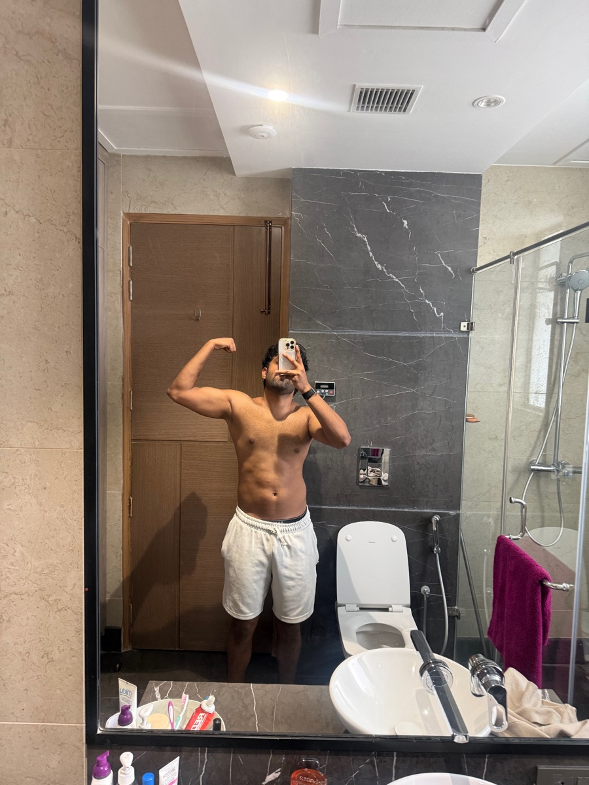

I've always enjoyed being uncomfortable. I have always liked the struggle.
It's been a part of me. For me, the pain has always equated to growth in the long term.
For the longest time, I'd intentionally put myself in uncomfortable situations to make my mind tough.
I want to get used to doing difficult things because it is what most people cannot do. Also, doing difficult things is what creates great work and great outcomes in life.
I have done it all.
- Waking up at 4AM for weeks.
- Fasting for 24 hours.
- Posting consistently for weeks.
- 75 Hard.
Today, I want to set up a micro-challenge for my mind.
This challenge includes the following:
- Wake up before 9AM
- Exercise (gym or running)
- Take a shower
- Eat less than 1700 calories throughout the day.
I have my Hyrox race scheduled on July 25 and the goal is to go from this to a ripped version.
